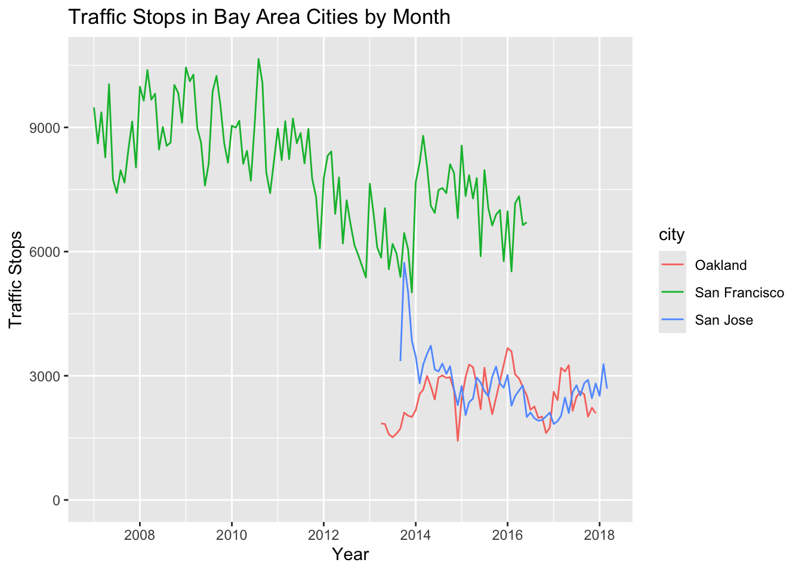
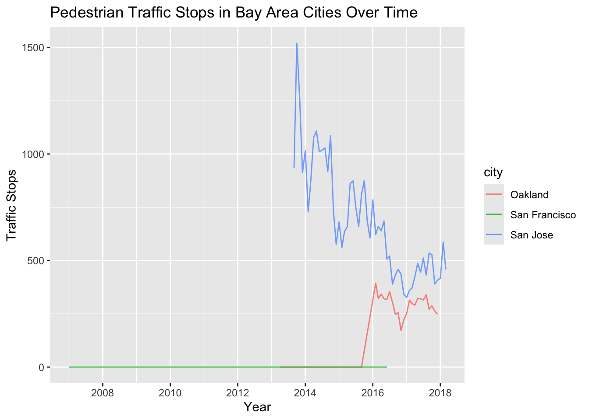
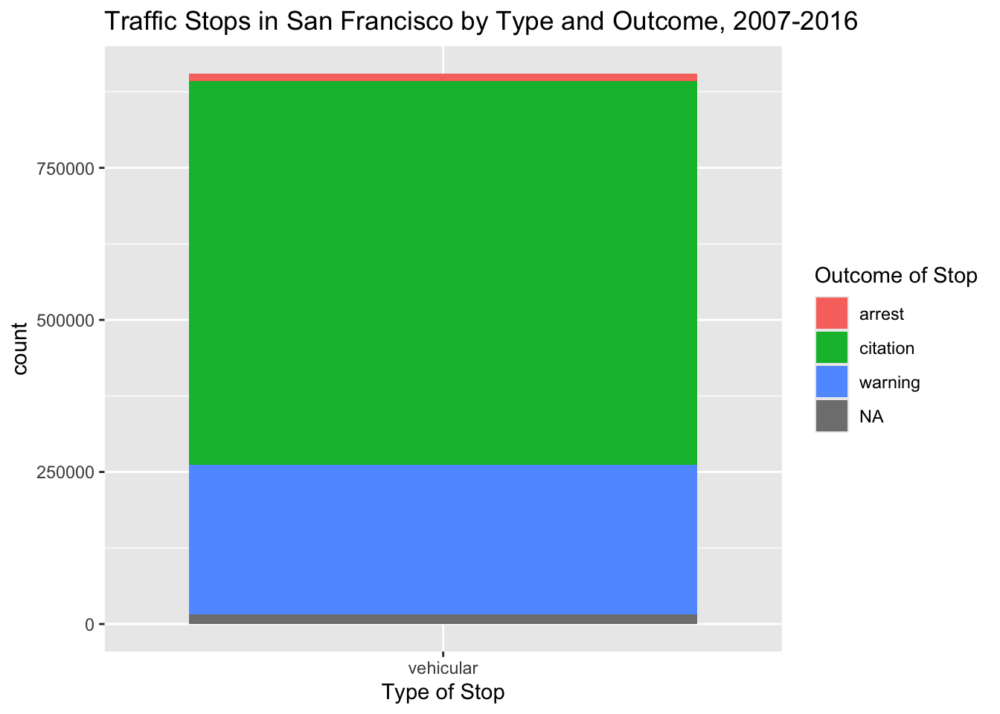
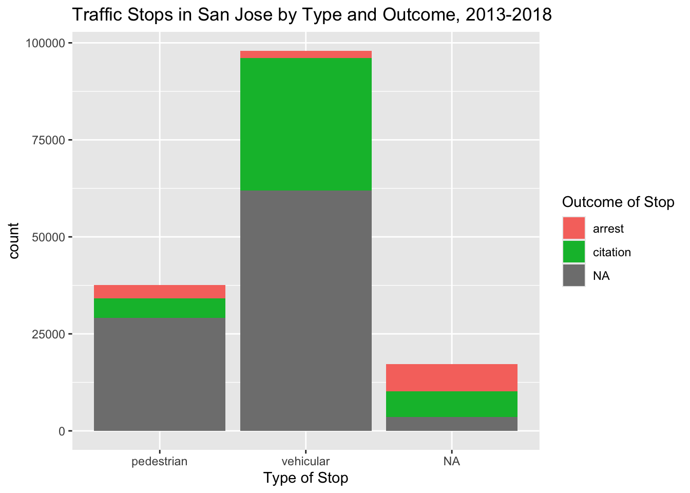
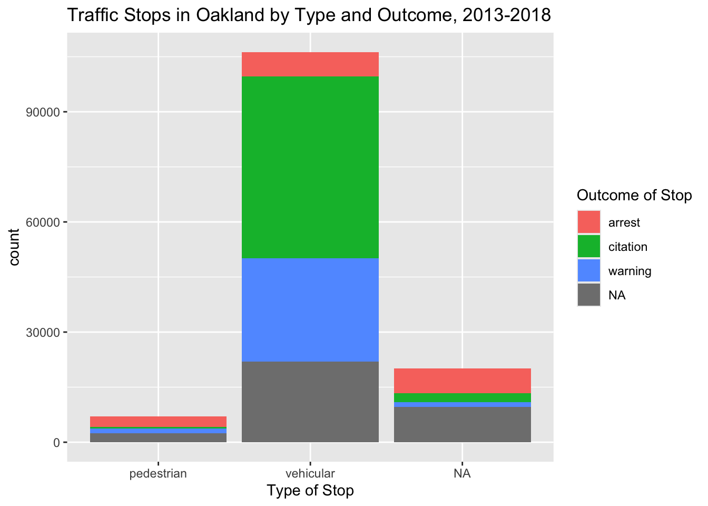

Show the code
library(tidyverse)
con_traffic <- DBI::dbConnect(
RMariaDB::MariaDB(),
dbname = "traffic",
host = Sys.getenv("TRAFFIC_HOST"),
user = Sys.getenv("TRAFFIC_USER"),
password = Sys.getenv("TRAFFIC_PWD")
)What relationship existed between types of traffic stops and their outcomes in San Jose, San Francisco, and Oakland?
Abigail Krenz
November 29, 2025
Data source: Pierson, Emma, Camelia Simoiu, Jan Overgoor, Sam Corbett-Davies, Daniel Jenson, Amy Shoemaker, Vignesh Ramachandran, et al. 2020. “A Large-Scale Analysis of Racial Disparities in Police Stops Across the United States.” Nature Human Behaviour, 1–10. https://pubmed.ncbi.nlm.nih.gov/32367028/.
Through this project, I hoped to analyze traffic stops across three Bay Area cities: San Jose, San Francisco, and Oakland. I was curious how the volume of traffic stops, including pedestrian stops, changed over time. I also wanted to determine whether there was a relationship between the type of stop–vehicular or pedestrian–and the outcome of the stop.
I first opened a connection with the Stanford Open Policing database:
I then queried the tables of the three cities to find the total number of traffic stops made each month.
SELECT "Oakland" AS city, DATE_FORMAT(date, '%Y-%m') AS yr_month, COUNT(*) AS num_stops
FROM ca_oakland_2020_04_01
GROUP BY yr_month
UNION
SELECT "San Francisco" AS city, DATE_FORMAT(date, '%Y-%m') AS yr_month, COUNT(*) AS num_stops
FROM ca_san_francisco_2020_04_01
GROUP BY yr_month
UNION
SELECT "San Jose" as city, DATE_FORMAT(date, '%Y-%m') AS yr_month, COUNT(*) AS num_stops
FROM ca_san_jose_2020_04_01
GROUP BY yr_month;Next, I charted these monthly traffic stops in a line graph. As you can see below, the time frame of available data differs across each city: In San Francisco, data began in 2007 and ended in mid-2026. For Oakland and San Jose, data began in 2013 and ended around 2018. San Francisco has consistently seen the highest numbers of stops, while the number of stops in Oakland and San Jose have been less and roughly comparable to one another.

I then followed a similar process to examine the number of pedestrian stops made in the three cities over time.
SELECT "Oakland" AS city, DATE_FORMAT(date, '%Y-%m') AS yr_month, SUM(type = "pedestrian") AS ped_stops
FROM ca_oakland_2020_04_01
GROUP BY yr_month
UNION
SELECT "San Francisco" AS city, DATE_FORMAT(date, '%Y-%m') AS yr_month, SUM(type = "pedestrian") AS ped_stops
FROM ca_san_francisco_2020_04_01
GROUP BY yr_month
UNION
SELECT "San Jose" as city, DATE_FORMAT(date, '%Y-%m') AS yr_month, SUM(type = "pedestrian") AS ped_stops
FROM ca_san_jose_2020_04_01
GROUP BY yr_monthAs the following line graph reveals, even though the San Francisco data included a variable for the type of stop, no pedestrian stops were documented across the period. Oakland seems to have only begun documenting pedestrian stops in late 2015. In San Jose from 2013 to 2018, the numbers of pedestrian stops decreased, in Oakland from 2016 to 2018, the number of pedestrian stops did not noticably increase or decrease.

The following SQL chunk confirmed my suspicion that San Francisco only documented vehicular stops:
To examine what relationship existed between the type of stop and its outcome (arrest, citation, etc.) across cities, I queried and graphed the data for all three cities.
SAN FRANCISCO:
Predictably, the graph for San Francisco was not very interesting because only one type of arrest existed in the data. Citations were by far the most common outcome followed by warnings. Only small numbers of stops ended in arrests, and only a tiny proportion of stops had outcomes that were not documented.

SAN JOSE:
In San Jose, it was quite common for the outcome of a stop to be missing, especially for pedestrian stops, and no “warning” outcome was included. The type of stop was also missing for many observations. Arrests were more common for pedestrian stops as opposed to vehicular ones. Conversely, citations were more common for vehicular stops than for pedestrian ones.
outcomes_by_type_sj |>
ggplot(aes(x = type, y = count, fill = outcome)) +
geom_bar(stat = "identity") +
scale_fill_manual(values = c("citation" = "#00BB38", "arrest" = "#F7766D", "NA" = "#7F7F7F")) +
labs(title = "Traffic Stops in San Jose by Type and Outcome, 2013-2018", fill = "Outcome of Stop", x = "Type of Stop")
OAKLAND:
In Oakland, outcomes included a “warning category.” Although pedestrian stops were rare, a higher percentage of percentage of pedestrian stops ended in arrest in comparison to vehicular stops. Both warnings and citations were more common for vehicular stops.

CONCLUSION:
This analysis revealed the inconsistent, and often incomplete, ways that traffic stops have been documented in these three Bay Area cities across time. Pedestrian stops were not documented at all in San Francisco and were only documented after the first two years of available data in Oakland. In both San Jose and Oakland, information on the type and outcome was missing for a high proportion of traffic stops. Nevertheless, preliminary analysis revealed that for both San Jose and Oakland, arrests were more common for pedestrian stops, and citations were more common for vehicular stops.